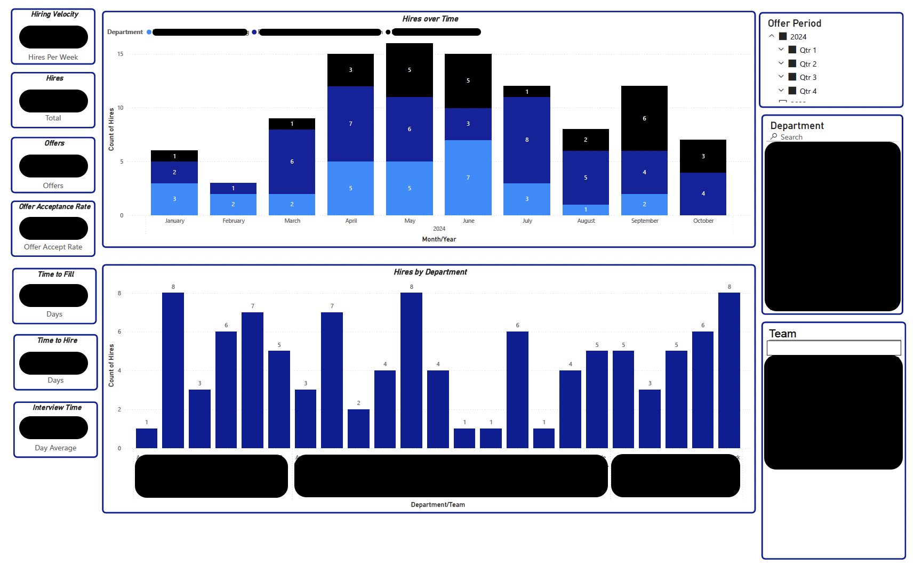
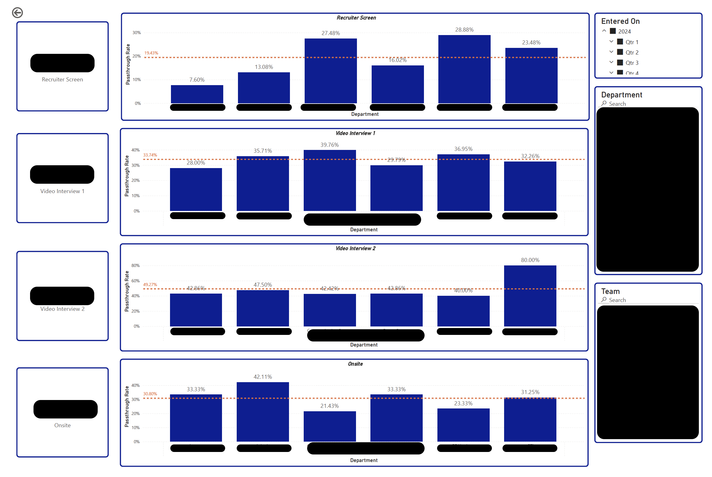
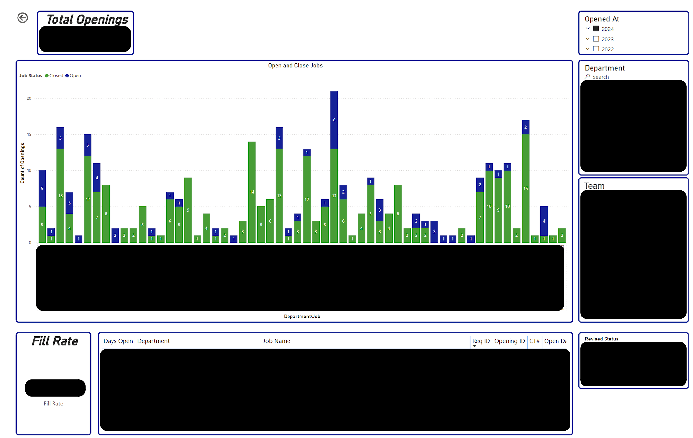
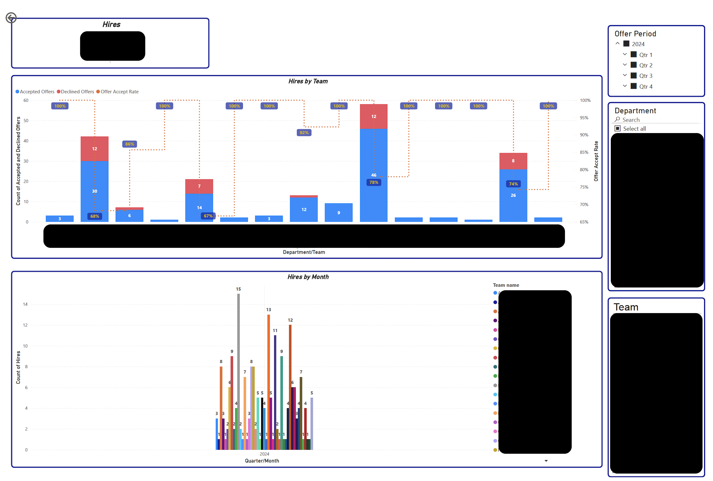
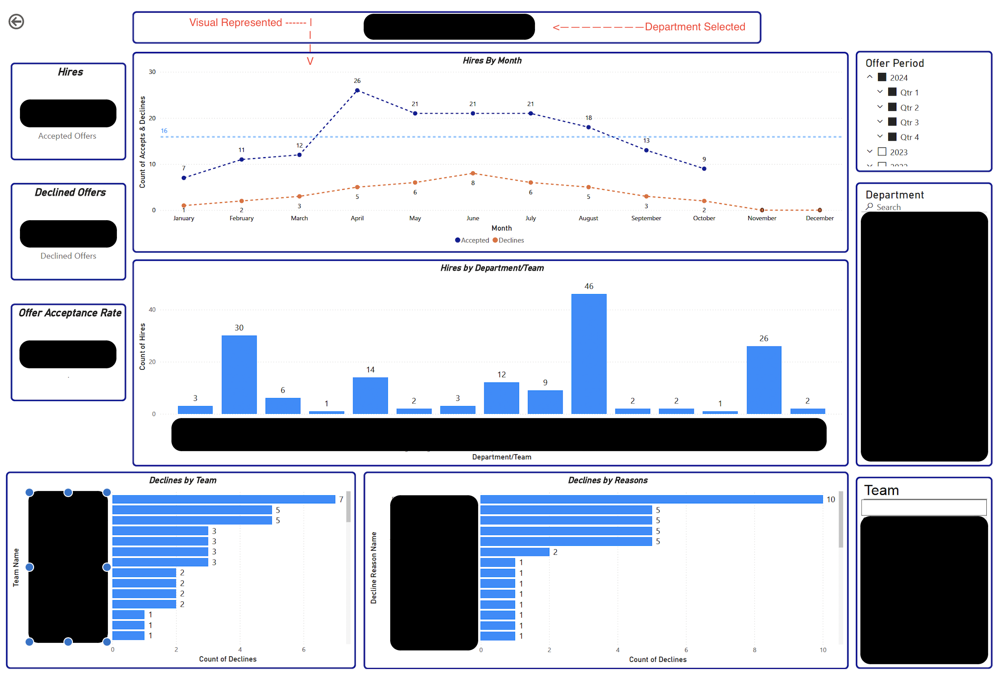
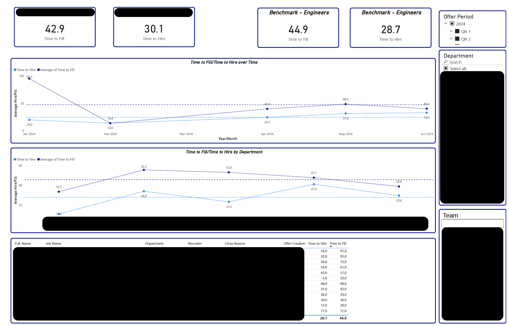

Talent Analytics Dashboard
Talent Analytics Dashboard
This analysis provides a comprehensive overview of hiring performance, offering insights into the efficiency and effectiveness of the recruitment process across various departments and roles. By examining metrics such as hiring velocity, time to fill, and time to hire, we can identify both areas of strength and opportunities for improvement. The overall summary reveals hiring trends over time, showing monthly fluctuations in hiring volume and highlighting departments with higher resource demands. Offer acceptance rates and declines by reason provide a deeper understanding of candidate satisfaction and decision-making, with acceptance rate trends by department helping pinpoint teams with consistently high or low success in securing hires. Additionally, passthrough rates across each pipeline stage—broken down by both department and job—identify potential bottlenecks and highlight roles where candidates may struggle to progress.
For open positions, tracking days open and fill rates by job and department sheds light on any prolonged vacancies, guiding better resource allocation and timeline management. Finally, the analysis on time to fill and hire over time, segmented by department, enables a long-term view of efficiency improvements or setbacks. Together, these insights offer a clear, data-driven picture of the recruitment landscape, enabling targeted interventions to optimize the hiring process, reduce time-to-hire, and increase offer acceptance, ultimately strengthening talent acquisition strategies across the organization.
Talent Summary

In examining hiring velocity, we measure the speed at which our hiring process advances, capturing how quickly candidates move through the pipeline and highlighting variations in recruitment pace over time. This data helps us understand how efficiently we're meeting hiring demands in different periods.
We also assess total hires within the analysis period, capturing the overall volume of successful hires to quantify recruitment achievements. Alongside this, we tally the total offers extended, providing a breakdown of accepted versus declined offers, and analyze our offer acceptance rate to determine the proportion of offers that result in a successful hire. This rate is a critical indicator of the appeal of our offers and the competitiveness of our recruitment process.
The analysis continues with a look at time to fill, which averages the number of days from opening a position to the candidate's acceptance of the offer. By comparing these metrics across departments, we can identify where roles are filled most efficiently. Similarly, time to hire captures the timeline from the first contact with a candidate to their acceptance, showing us the efficiency of our engagement and interview process, with variations by role type offering further insights.
Interview time tracks the average duration candidates spend in interviews, reflecting the time investment required by different departments or roles and helping us optimize scheduling and interview structure. Meanwhile, hires over time provide a month-by-month view of hiring patterns, revealing seasonal or cyclical trends in recruitment activity.
Lastly, hires by department showcase the distribution of hires, indicating which departments have the highest recruitment needs and are allocated the most resources. Together, these metrics form a detailed narrative of our hiring efficiency, helping us track performance, optimize our recruitment process, and strategically allocate resources across departments.
Passthrough Rates by Pipeline Stage

The analysis of passthrough rates by pipeline stage reveals how candidates progress through each hiring phase across departments, offering insights into departmental performance and identifying any process bottlenecks. Starting from the Recruiter Screen, candidates advance through stages such as Video Interview 1, Video Interview 2, and finally, the Onsite interview. Each stage’s passthrough rate has been calculated for every department, showing how effectively each department moves candidates forward.
To put these departmental rates into perspective, overall benchmark passthrough rates for each stage provide a baseline comparison. Departments performing above the average at specific stages, like the initial Recruiter Screen or first video interview, indicate smooth and efficient screening processes, potentially attributed to clear role expectations or strong recruiter-candidate alignment. Conversely, departments with passthrough rates consistently below the overall benchmark highlight potential areas for process refinement. For instance, if a department sees significant drop-offs at the Video Interview 2 stage, it could point to issues such as overly stringent criteria, candidate misalignment with role expectations, or assessment inconsistencies.
This comparison of departmental performance to overall averages provides a roadmap to optimize candidate progression through each pipeline stage, helping each department align with best practices and improve hiring outcomes.
Total Openings by Department & Job Role

In analyzing total openings by department and job role, we focused on the status of each position, whether open or closed, to better understand hiring demand and progress across the organization. For each department and job, we summarized the total number of openings, distinguishing between those that are actively recruiting and those that have been filled. This breakdown revealed the distribution of hiring needs by team and highlighted departments with a significant number of open roles still awaiting suitable candidates.
To gain further insight, we examined the average number of days each position remains open until it is filled. For closed roles, this metric indicated the typical duration of recruitment cycles, with particular attention to positions that stayed open for extended periods. Identifying these outliers allows us to investigate underlying causes, such as niche skill requirements or potentially misaligned recruiting strategies, that could be impacting the ability to fill certain roles promptly.
Lastly, we calculated the fill rate for each department and job, identifying the percentage of positions filled relative to total openings. Departments or roles with particularly high fill rates demonstrate efficient hiring processes, while lower fill rates indicate areas where hiring support or adjustments may be needed. Together, these metrics provide a clear picture of where the hiring process is operating smoothly and where there are opportunities to enhance recruitment efficiency, reduce vacancy durations, and meet departmental staffing needs more effectively.
Offer Accepts & Declines by Department/Team

The analysis of offer outcomes by department reveals key insights into both acceptance and decline patterns, allowing us to assess each team's success in converting offers into accepted hires. By examining the counts of offers accepted and declined within each department, we can identify trends in candidate decision-making and gauge the appeal of various roles and departments. This breakdown highlights which teams have higher acceptance rates, potentially reflecting effective negotiation strategies, competitive offers, or strong alignment between candidate expectations and role requirements. Conversely, departments with lower acceptance rates may benefit from a closer look at common decline reasons, such as compensation, role alignment, or team dynamics, to refine their approach and increase offer acceptance.
The offer acceptance rate calculated per department offers a deeper level of insight, serving as an indicator of each team's effectiveness in securing top talent. High acceptance rates suggest strong candidate satisfaction and alignment with the opportunities provided, while lower rates might indicate areas where adjustments in offer packages, role clarity, or candidate experience could lead to better results. By isolating these metrics for each team, we gain a clearer view of department-specific dynamics and can identify actionable strategies to enhance overall recruitment success. This analysis ultimately provides a data-driven foundation for refining offer processes, improving candidate experience, and ensuring a stronger alignment between organizational needs and the talent brought on board.

In examining the reasons behind offer declines across teams, we noticed a few consistent trends that shed light on the key factors influencing candidates’ decisions to decline. Compensation emerged as a common factor, with several candidates citing salary expectations that were not fully met. Additionally, some candidates expressed concerns over role alignment, suggesting that the job responsibilities or growth potential did not fully align with their career aspirations. Location also played a significant role, particularly for candidates who would need to relocate or travel frequently.
When analyzing declines by team, distinct patterns surfaced that suggest specific challenges some teams face in securing candidate acceptance. For instance, certain technical teams encountered higher decline rates related to role alignment, potentially indicating a gap between candidate expectations and role specifications. On the other hand, teams with roles requiring relocation or extensive travel faced declines due to location constraints more frequently than teams offering flexible work options. By understanding these patterns, we can better address candidate concerns, refine our approach to job offers, and tailor our recruitment strategy to meet the unique needs of each team.
Time to Fill/Time to Hire Over Time and by Department

Over time, tracking both time to fill and time to hire reveals essential insights into the efficiency of the recruitment process and highlights trends in how quickly roles are filled across departments. By analyzing these metrics at the departmental level, we can observe where hiring timelines may be improving, remaining consistent, or facing setbacks. For example, departments with decreasing time-to-fill trends may indicate streamlined processes, efficient candidate sourcing, or refined interview stages. Conversely, departments where time-to-fill has increased may suggest challenges in sourcing, prolonged interview phases, or other factors affecting the hiring speed.
To add granularity, tracking time to hire and time to fill for individual candidates provides valuable, candidate-specific insights. This includes evaluating the influence of recruiter involvement, examining specific reasons for requisition closures (such as role realignments or budget shifts), and detailing offer specifics that might affect acceptance timelines. By analyzing these candidate-level metrics, we gain a more nuanced understanding of the hiring process, which can reveal both efficiencies and pain points that might not be visible in department-wide trends alone. Together, these metrics illuminate areas for improvement, empowering the recruitment team to make data-informed adjustments that can further reduce time-to-fill and time-to-hire in the future.